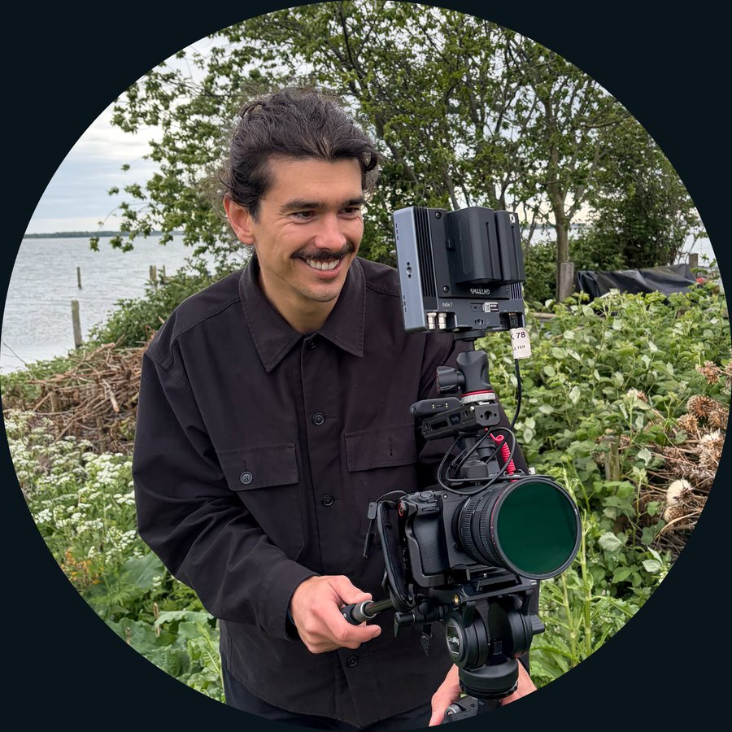
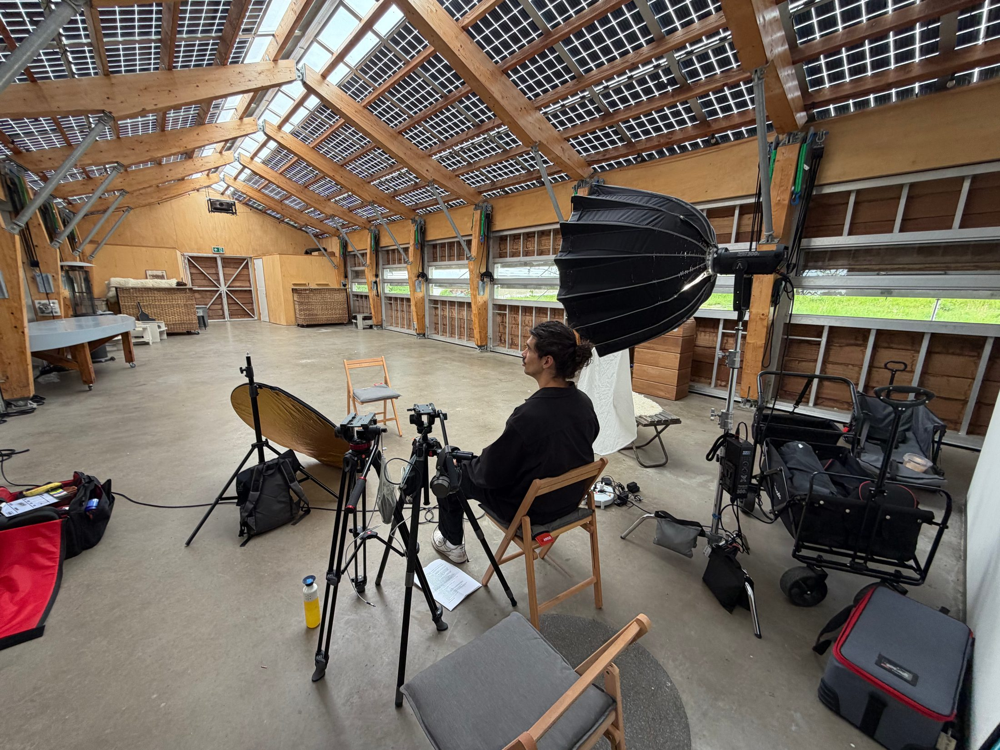

Film for deep tech
Founder-led documentaries and platform-native content that turn hard technology into stories audiences actually follow — for the companies building it, and the investors backing them.
Founders are building. Investors are investing. And the incredible visual stories of the new world they're creating is being told by…?
In this new age of media the keys to attention lie in the hands of those with access to the best stories. And you already have the access.
Founder-led films made with your portfolio companies compound both your authority, and theirs. On your channels. On your own schedule. With your narrative prioritised.
It's a media ecosystem which no single stakeholder could build alone.
That's how the best talent decides you offer more than capital. It's how LPs see your thesis working before the numbers prove it. And it's how the industry learns who you are before you even enter the room. So that when you do, you're already a step ahead.
Your best recruiting tool isn't a job listing — it's proof that the work is real, hard, and matters. A film that shows your engineers solving an actual problem does more to attract talent, customers, and follow-on investors than another slide deck ever will.
Founders and engineers aren't media people, and that's fine — it's not what they're good at, and it's not what they signed up for. My job is to make the conversation feel like a conversation, ask the questions that get past the rehearsed answer, and shape what's left into something people actually want to watch to the end.
Show the calibre of problem your team gets to work on, before the interview even starts.
Give a future lead investor something to watch before the first call, not just a deck to read.
Turn a hard-to-explain technology into something a customer or regulator can actually follow.
A selection of mini-documentaries and platform-native shorts made with deep tech and climate companies. Each one opens in its original home, where you can see it performing.

I direct and produce content for deep tech and climate companies — and for the funds that back them. Before this, I spent a few years making content the traditional way and learning, slowly, that filmmaking is the last step, not the first.
Content strategy comes first: understanding the platform your audience is actually on, and the format they're ready for. Interviewing comes second — most technical founders and engineers aren't natural performers, and getting the real answer out of them is its own skill. Filmmaking comes last.
In the last six months I helped grow Foundation Zero's LinkedIn audience from 1,000 to 4,000 followers, and brought in their first 500 YouTube subscribers, off the back of a single ongoing content campaign around their off-grid island research site near Amsterdam.
